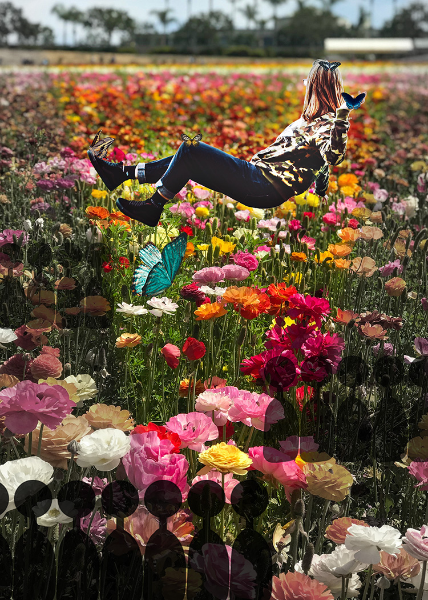

In the second photomontage, you see a woman floating in a flower field. There are numerous butterflies clinging to her and are drawn to the energy she exhibits. The actual field of flowers has been changed, with an element of desaturation visible on the sides. The area in which the woman is visible has been altered to be more saturated, and this was a deliberate decision. There is also the repeating graphic visible– a silhouetted shape of an audience, watching on as this colorful, magical moment occurs in front of them while they shy away. My motivation for this piece was once again ecological and societal to an extent. I propose ecological reasons because the desaturation of the flower field is meant to highlight the cycle of life and death, for all living things including that which we take for granted– flowers. In addition, it highlights the importance of caring for the environment, and allowing nature to blossom without human interference. There’s also the societal aspect and behavioral point about onlookers and a sense of envy, as these silhouettes represent bystanders that may wish to be in that position of the levitating girl. The reason why I put them in the desaturated segment of the image is to let the girl shine, as this moment of magic is hers, and should be exclusive to her.
